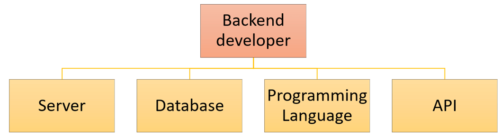

Back End

The back end refers to parts of a computer application or a program's code that allow it to operate and that cannot be accessed by a user. Most data and operating syntax are stored and accessed in the back end of a computer system. Typically the code is comprised of one or more programming languages.

The back end is also called the data access layer of software or hardware and includes any functionality that needs to be accessed and navigated to by digital means.

A back-end application or program supports front-end user services, and interfaces with any required resources. The back-end application may interact directly with the front end or it may be called from an intermediate program that mediates front-end and back-end activities.